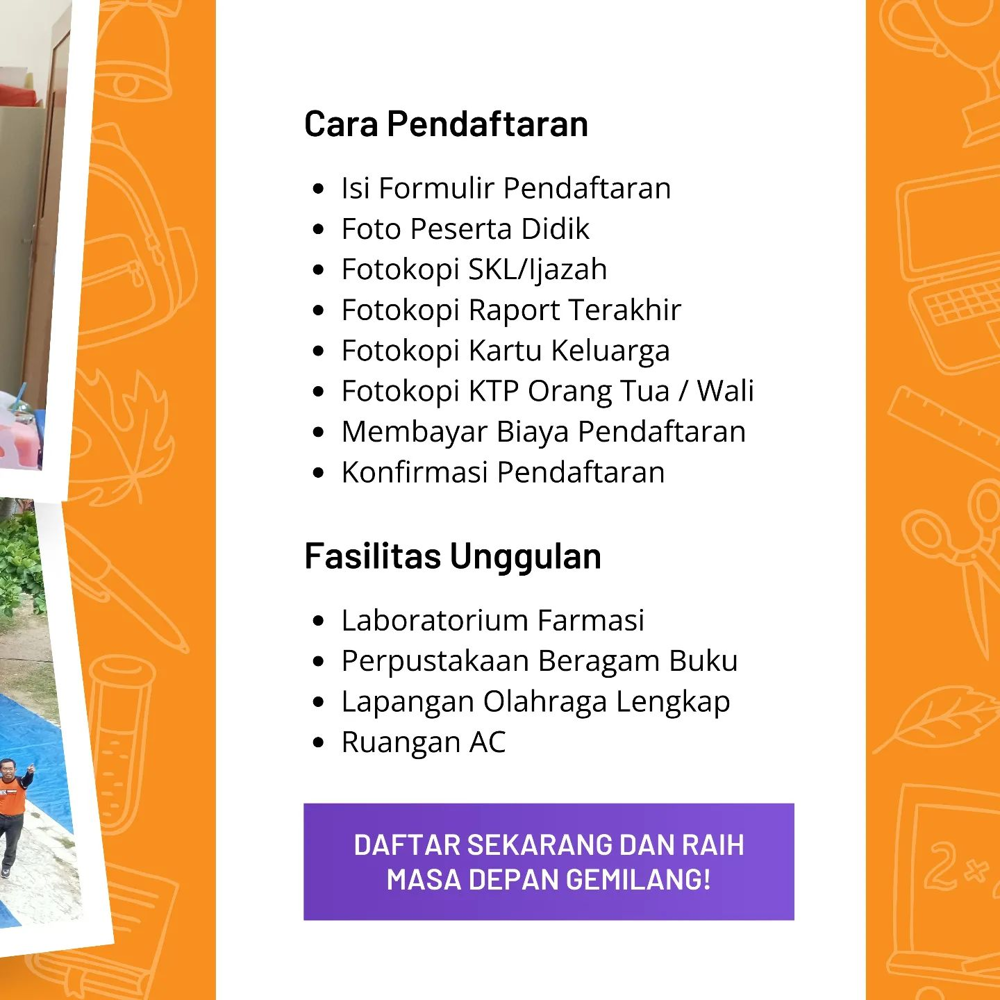

tentang etika profesi farmasi, pengelolaan apotek, dan pelayanan farmasi kepada pasien. Tujuan utama jurusan ini adalah menghasilkan tenaga farmasis yang dapat memberikan informasi yang akurat dan aman terkait obat kepada masyarakat.

SMK KESEHATAN BANDAR LAMPUNG
Sekolah kejuruan unggulan di Bandarlampung yang sangat mengutamakan kualitas dan integritas
Farmasi
Jurusan Farmasi membekali siswa dengan pengetahuan dan keterampilan terkait obat-obatan. Mereka mempelajari cara meracik obat, dosis, efek samping, dan interaksi obat. Siswa juga diajarkan
Teknologi Laboratorium Medis
Jurusan Teknologi Laboratorium Medis mempersiapkan siswa untuk menjadi tenaga laboratorium medis yang dapat melakukan berbagai jenis analisis di laboratorium kesehatan.
Siswa mempelajari teknik pengambilan dan pengolahan sampel biologis, serta menggunakan peralatan laboratorium modern untuk mendiagnosis penyakit. Mereka juga memahami prinsip-prinsip dasar kimia, mikrobiologi, dan hematologi yang berkaitan dengan pekerjaan laboratorium medis.
Keperawatan
Jurusan Keperawatan menyiapkan siswa untuk menjadi perawat yang terampil dan berempati. Mereka mempelajari anatomi, fisiologi, dan patologi tubuh manusia, serta keterampilan keperawatan dasar dan lanjutan.
Siswa juga dilatih dalam manajemen pasien, komunikasi efektif, dan penanganan keadaan darurat. Selain itu, mereka mendapatkan pemahaman tentang etika keperawatan dan berbagai aspek dalam memberikan asuhan keperawatan yang holistik kepada pasien. Jurusan ini membuka pintu bagi karir di rumah sakit, klinik, dan berbagai lembaga kesehatan

Pelaksanaan Kegiatan Guru Tamu dari Universitas Teknokrat Indonesia
Bandar Lampung Guru tamu merupakan program pembelajaran dimana siswa akan diajar oleh instruktur yang berasal dari luar instansi sekolah misalnya dari dunia kerja yang relevan dengan kompetensi keahlian yang ada. Kegiatan kali ini mendatangkan guru tamu Heni Sulistiani, M.Kom dari Universitas Teknokrat Indonesia dengan materi ” Implementasi Administrasi Perkantoran untuk Meningkatkan Kompetensi Profesional Siswa/i
SMA Kesehatan Balam Raih Juara 3 Futsal dan Dance dalam ajang SDB Fair Tahun 2023
Siswa-siswi SMA Kesehatan Bandar Lampung tak henti-henti nya menorehkan prestasi yang membanggakan. Dalam perlombaan tingkat SMA yang diselenggarakan oleh Sekolah Darma Bangsa, SMA Kesehatan Bandar Lampung sukses meraih peringkat ke tiga dalam bidang dance dan futsal.
MARS SMK Kesehatan Bandar Lampung
Youtube SMK Kesehatan